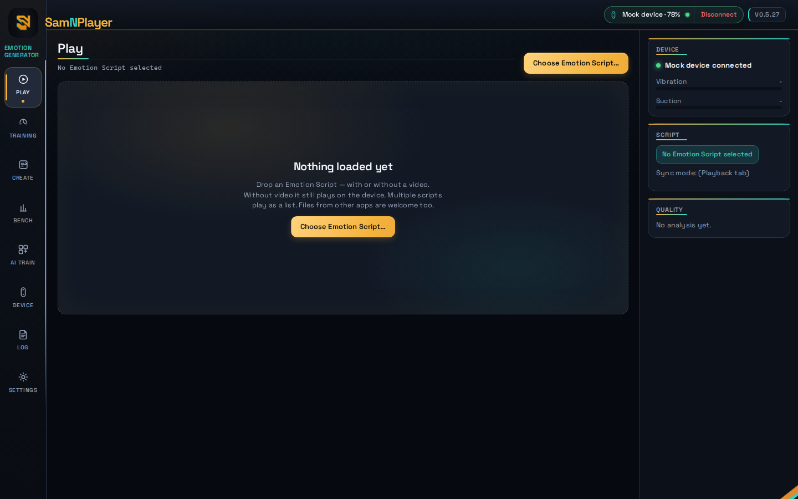
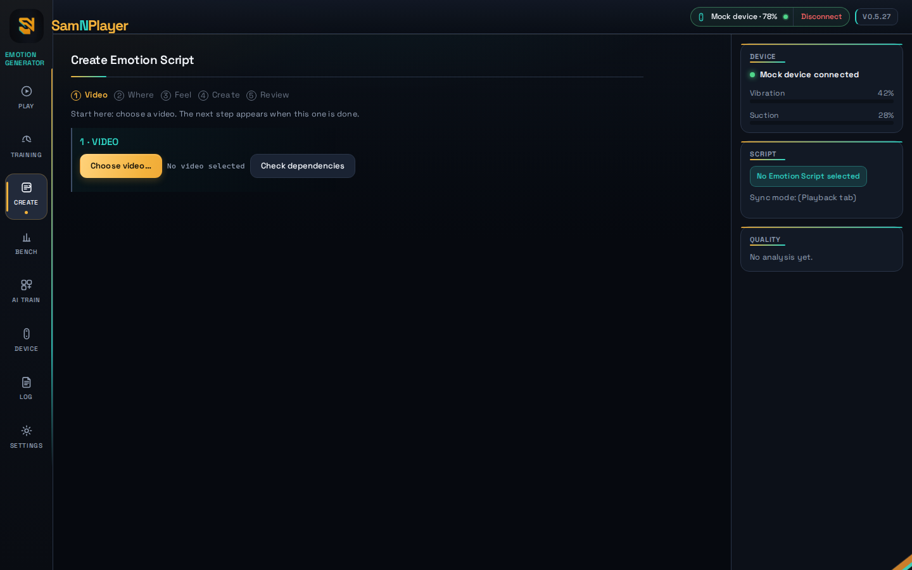

SamNPlayer
SamNPlayer
Emotion Generator
Create and play Emotion Scripts (.samn)
for SVAKOM Sam Neo 2 — measured motion, first-class device control,
optional on-device AI that never writes alone.
Why this app
Most tools are a player or a generator — often inside a 100+ MB Electron shell. SamNPlayer keeps the full Emotion Script loop honest and small.
- Size
- ~13 MB native GUI (OS webview via Wails — no bundled Chromium)
- Scope
- Play + Create + device + training in one window
- Format
- Emotion Script (
.samn) first — Funscript only for share / import - AI
- Optional local ONNX — AI proposes; classical tracking writes the script
- Privacy
- Local-only — no model in the binary, no surprise downloads, no cloud calls
- Device
- Sam Neo 2 first-class (BLE + Intiface + Mock) with diagnostics
- Quality
- Quality Doctor, Script Doctor, golden-clip benchmark — numbers before claims
What you get
Create · Play · Train. One composition. English UI.


Guides & notes
Short English pages — first run, Neo 2 Bluetooth, license import, and the ideas behind the product.
Personal license
€40 / year
One person. One year. Full Create + Neo 2 Emotion Script playback. Invite / internal keys for early testers.
- Retail — €40 / year — named seat, expires after 365 days from issue
- Trial path — unlicensed Create capped at 1 minute; imported community scripts still play
- Import — paste or file in Settings → License (Ed25519
SNP1token)
Checkout and automatic key delivery are not live yet. Until then, request a key from the owner after download — or use the public builds while enforcement stays off. See Import a license key.
Download
Prefer the portable archive — ffmpeg / ffprobe ship next to the GUI. Windows and Linux amd64 today; macOS when a Mac builder exists. Latest: v0.5.27.
Latest release Getting started
Verify with checksums.txt in the release.
Bluetooth on Windows 11: external dongle with antenna recommended
(e.g. TP-Link UB500 / Asus USB-BT500) — full guide.
Honest limits
- No FunGen clone theater — no silent AI-only Emotion Scripts
- No cloud sync, telemetry, or bundled model weights
- macOS / mobile player: planned, not shipped
- Application source is private; this site ships binaries and screenshots only